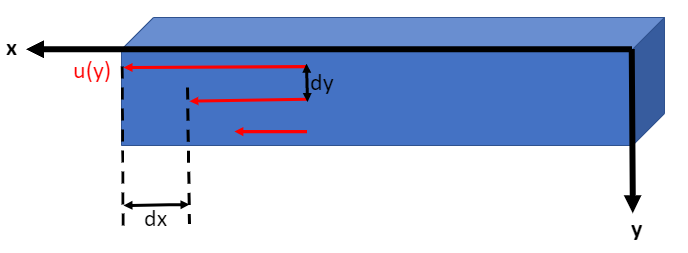
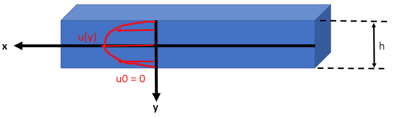
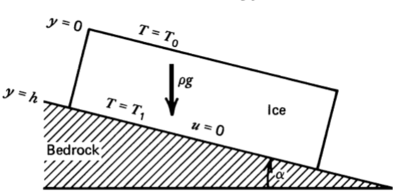
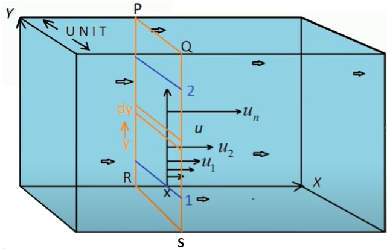

Lecture6_Non_Linear_Viscosity_2D_Stokes
Contents
Lecture6_Non_Linear_Viscosity_2D_Stokes#
Although fracture is important in shallow crustal rock at low temperatures and pressures, there are many circumstances in which rock behaves as a ductile material. In determining the transition from brittle to ductile behavior, pressure, temperature, and strain rate are important.
At temperatures that are a significant fraction of the melt temperature the atoms and dislocations in a crystalline solid become sufficiently mobile to result in creep when the solid is subjected to deviatoric stresses. At very low stresses diffusion processes dominate, and the crystalline solid behaves as a Newtonian fluid with a viscosity that depends exponentially on pressure and the inverse absolute temperature.
At higher stresses the motion of dislocations becomes the dominant creep process resulting in a non-Newtonian or nonlinear fluid behavior that also has an exponential pressure and inverse absolute temperature dependence.
 Figure 7.1: Shear strain in the fluid is measured by the displacement $dx$ between two nearby layers with a distance of $dy$.The rate of strain measures the speed of deformation, and is defined by
Recall that the cause for strain or deformation is stress, which is defined by
where \(\tau\) and \(\sigma\) are used interchangeably for stress, and \(\mu\) (or sometimes \(\eta\)) is viscosity.
Therefore, we have obtained the relationship between stress and strain rate:
where \(A = \frac{1}{\mu}\).
If the strain rate is linearly proportional to the change of stress (n = 1), then the fluid is Newtonian (diffusion creep).
If \(n>1\), the fluid is non-Newtonian (dislocation creep).
If \(n\rightarrow\infty\), the fluid is pseudo-plastic.
Effective Viscosity#
The viscosity of drilling mud will change with a change in the shear rate because in some degree drilling fluids are shear-thinning. Because of its nature of drilling mud, people create the new term of viscosity called “Effective Viscosity” to compensate the change in shear rate of viscosity. By definition, the effective viscosity means the viscosity of Newtonian fluid that gives the same shear stress at the same shear rate.
As we can see from figure 7.2, the viscosity changes with stress in a non-Newtonian fluid. However, based on lab experiments, the variable viscosity (not constant anymore), or effective viscosity, is dependent on not only stress \(\sigma\) but also many factors (e.g. temperature \(T\)):
where the details of the equation can be found online and
In this chapter, we mainly discuss the channel flow of stress-dependent viscosity and temperature-dependent viscosity.
Problem 7.10 (Stress-dependent viscosity)#
Suppose we assume the viscosity of the fluid is only stress-dependent, then the equation (83) can be simplified to a power-law (equation (82) ) with respect to stress \(\sigma\). Then, we can get the analytical solution of effective viscosity and other quantities for the fluid in channel flow. Suppose we have no-slip boundary at \(y=\pm h/2\) and the strain rate obeys the power law.
 Figure 7.3: The velocity profile is symmetric due to the boundary conditions and the geometry of the channel.Balancing viscous shear and pressure forces, we have
Therefore, we can obtain the equation for stress by integrating wrt. y
Since we know that the stress can be expressed as
and that the \(\frac{du}{dy}=0\) at \(y=0\) by inspecting the velocity profile in figure 7.3, we can obtain
So we know that the integral constant \(C\) in (86) is zero.
Also, we have an non-linear relationship between the stress and strain rate for the non-Newtonian fluid as follow
We can plug in the \(\tau\) from (89) into (85) and arrive at
Further integrating (90), and using the boundary condition \(u(y=\pm h/2)=0\), we have the velocity profile
We can also obtain the mean velocity across the channel
Now, using the idea that the effective viscosity is the ratio between stress and strain rate, we have
where \(\frac{dp}{dx} = \frac{p_1-p_0}{L}\)
And using the boundary condition, we can derive the scaled effective viscosity (as a function of \(y/h\) or scaled \(y\) distance where \(-h/2 < y < h/2\)).
We can plot (94) for \(n=1,3,5\) and for \(-0.5<y/h<0.5\).
import numpy as np
import matplotlib.pyplot as plt
N = 10000 # number of points to plot (ignore)
n_list = [1,3,5]
def main():
y_h = np.linspace(-0.5, 0.5, N)
for n in n_list:
scal_eff_mu = (2*y_h)**(1-n)
plt.figure()
plt.plot(y_h, scal_eff_mu)
plt.legend(str(n))
plt.xlabel('$y/h$')
plt.ylabel('$scaled effective viscosity$')
plt.title('Scaled Effective Viscosity Profile')
plt.ylim(0, 5)
plt.show()
if __name__ == '__main__':
main()
Problem 7.12 (T-dependent viscosity)#
Now, let’s assume that the viscosity of the fluid is only temperature-dependent. We can determine the velocity profile \(u(y)\) for a classic model as shown below:
 Figure 7.4: Icesheet with thickness $h$ on sloping bedrock, creeping downhill under its own weight. The temperature profile is linear and $(T_1-T_0)/T_0$ is small. It is no-slip at base.First, we can write out the temperature profile
We assume the temperature dependence of the pre-exponential factor as negligible compared with the temperature dependence of the exponential factor, so the equation (83) simplifies to
Plugging the equation (95) in (96), and using Taylor expansion for the exponential term, we have
Also, from the forces analysis shown by figure 6.3 in lecture 5, we have
Integrating it with the boundary condition \(\tau = 0\) at \(y=0\), we have
Since effective viscosity is the ratio between stress \(\tau\) and strain rate \(du/dy\), we can combine equations (97) and (99) and have
where we defined constant \(G\) and \(B\) for simplicity.
After integration, we have
Since it is no-slip base, we have the boundary condition \(u=0\) at \(y=h\). Apply this boundary condition we can solve the constant
Hence, the equation of the velocity profile can be obtained
import numpy as np
import matplotlib.pyplot as plt
N = 10000 # number of points to plot (ignore)
h = 1 # ice sheet thickness
alpha = 20 # slope
rho = 1000 # density of ice
g = 10 # gravitational acceleration
C = 1000000 # term before expential in equation 6, tbh i didnt check the value for ice, just a random value here
E = 75 # creep activation energies of ice
R = 8 # universal gas constant
T0 = 9 # surface temperature
T1 = 10 # base temperature hotter because heat absorption and release
G = np.sin(alpha)*rho*g/(C*np.exp(E/(R*T0)))
B = E*(T1-T0)/(R*T0^2*h)
C1 = G*np.exp(B*h)/(B*B) - G*h*np.exp(B*h)/B
def main():
y = np.linspace(0, h, N)
u = G*np.exp(B*y)/(B*B) - G*y*np.exp(B*y)/B + C1
plt.figure()
plt.plot(y, u)
plt.xlabel('$y(m)$')
plt.ylabel('$u(y)$')
plt.title('Velocity Profile for Ice-sheet on a Slope')
#plt.ylim(-10000, 10)
plt.show()
if __name__ == '__main__':
main()
2-D Stokes#
Problem 6.10#
Determine the stream function for the general one-dimensional channel flow in lecture 5.
where we let \(\frac{1}{2\mu}\frac{dp}{dx}=0\), \(h=5\) and \(u_0=5\) for simplicity.
\(y\) |
\(u\) |
|---|---|
0 |
5 |
1 |
4 |
2 |
3 |
3 |
2 |
4 |
1 |
5 |
0 |
The stream function is a function in connnection with a fluid flow denoted by \(\psi\) who partial differentiation with \(y\) gives the velocity in \(x\) direction (i.e. \(u\)), and negative partial differentiation with \(x\) gives the velocity of fluid in \(y\) direction (i.e. \(v\)).
This is very confusing as in how the differentiation wiht \(y\) gives the velocity in \(x\) direction? It would certainly make more sense if it gives the velocity in \(y\) direction…Do not worry, let’s try to understand the stream function by looking at it in a one-dimensional channel flow before we move in to the two-dimensional case.
But let’s take a look at the definition of stream function \(\psi(x,y)\) in a two-demensional case
For the one-dimensional channel flow problem I have shown above, there is no velocity in the vertical direction, and so we only consider the velocity in the x-direction.
If we integrate it wrt. \(y\), then we can obtain the equation for the stream function
Discuss the physical meaning of \(\psi\) for this case.
So what does that \(\psi\) function mean?
 Figure 7.6: Volumetric Flow Rate of One-dimensional Channel Flow (with the width of z-direction equals 1).Let’s look at the tiny volumetric flow rate \(dQ\) through the tiny slice of thickness \(dy\) as shown above.
Then the overall volumetric flow rate through the whole section (from \(y=1\) to \(y=2\)) as shown in between the blue lines is
Compare the final part of equation (110) with (108), we realise that the stream function represents volumetric flow rate in a sense
Now, we should finally understand the very confusing equation (105) we mentioned before, with the help of figure 7.6. The horizontal velocity \(u\) equals the volumetric flow rate through the thin section \(dQ\) divided by the vertical thickness \(dy\), in this case
Sketch stream function and streamlines for the two end-member cases (Couette and P-driven). Pay attention to stream line orientation and spacing (in terms of colorbars).
So the streamlines represent the path of the particle in the channel flow, as we can imagine the path in this one-dimensional flow problem should be linear and horizontal. In another word, the particle should only flow in the x-direction as in there is no force acting on the y-direction.
from mpl_toolkits import mplot3d
import numpy as np
import matplotlib.pyplot as plt
N = 100 # number of points to plot (ignore)
mu = 0.001 # viscosity of water
dpdx = 0 # when pressure difference = 0, known as Couette flow
h = 5 # thickness of channel (m)
u0 = 5 # boundary (max) velocity (m/s)
x_range = 10 # length of the channel
def psi(x, y):
return 1/(6*mu)*dpdx*y**3 - h/(4*mu)*dpdx*y**2 - u0/(2*h)*y**2 + u0*y
x = np.linspace(0, h, N)
y = np.linspace(0, h, N)
X, Y = np.meshgrid(x, y)
Z = psi(X, Y)
fig = plt.figure(figsize=(7, 5))
ax = plt.axes(projection='3d')
ax.contour3D(X, Y, Z, 50, cmap='binary')
ax.set_xlabel('x')
ax.set_ylabel('y')
ax.set_zlabel('$\psi$')
ax.set_title('Stream Function $\psi$ in 3D Contours (Couette)')
plt.show()

import numpy as np
import matplotlib.pyplot as plt
import matplotlib.gridspec as gridspec
N = 100 # number of points to plot (ignore)
mu = 0.001 # viscosity of water
dpdx = 0 # when pressure difference = 0, known as Couette flow
h = 5 # thickness of channel (m)
u0 = 5 # boundary (max) velocity (m/s)
Y, X = np.mgrid[0:h:100j, 0:h:100j]
U = (1/(2*mu)) * dpdx * (Y*Y - h*Y) - (u0*Y)/(h) + u0
V = Y*0
speed = np.sqrt(U**2 + V**2)
fig = plt.figure(figsize=(14, 18))
gs = gridspec.GridSpec(nrows=3, ncols=2, height_ratios=[1, 1, 2])
# Varying color along a streamline
ax1 = fig.add_subplot(gs[0, 1])
strm = ax1.streamplot(X, Y, U, V, color=U, linewidth=2, cmap='autumn')
fig.colorbar(strm.lines)
ax1.set_title('Streamlines (Couette)')
ax1.set_xlabel('x')
ax1.set_ylabel('y')
plt.tight_layout()
plt.show()
from mpl_toolkits import mplot3d
import numpy as np
import matplotlib.pyplot as plt
N = 100 # number of points to plot (ignore)
mu = 0.001 # viscosity of water
dpdx = -10 # when pressure difference = 0, known as Couette flow
h = 5 # thickness of channel (m)
u0 = 5 # boundary (max) velocity (m/s)
x_range = 10 # length of the channel
def psi(x, y):
return 1/(6*mu)*dpdx*y**3 - h/(4*mu)*dpdx*y**2 - u0/(2*h)*y**2 + u0*y
x = np.linspace(0, h, N)
y = np.linspace(0, h, N)
X, Y = np.meshgrid(x, y)
Z = psi(X, Y)
fig = plt.figure(figsize=(7, 5))
ax = plt.axes(projection='3d')
ax.contour3D(X, Y, Z, 50, cmap='binary')
ax.set_xlabel('x')
ax.set_ylabel('y')
ax.set_zlabel('$\psi$')
ax.set_title('Stream Function $\psi$ in 3D Contours (P-driven)')
plt.show()
import numpy as np
import matplotlib.pyplot as plt
import matplotlib.gridspec as gridspec
N = 100 # number of points to plot (ignore)
mu = 0.001 # viscosity of water
dpdx = -10 # pressure driven flow
h = 5 # thickness of channel (m)
u0 = 5 # boundary (max) velocity (m/s)
Y, X = np.mgrid[0:h:100j, 0:h:100j]
U = (1/(2*mu)) * dpdx * (Y*Y - h*Y) - (u0*Y)/(h) + u0
V = Y*0
speed = np.sqrt(U**2 + V**2)
fig = plt.figure(figsize=(14, 18))
gs = gridspec.GridSpec(nrows=3, ncols=2, height_ratios=[1, 1, 2])
# Varying color along a streamline
ax1 = fig.add_subplot(gs[0, 1])
strm = ax1.streamplot(X, Y, U, V, color=U, linewidth=2, cmap='autumn')
fig.colorbar(strm.lines)
ax1.set_title('Streamlines (P-driven)')
ax1.set_xlabel('x')
ax1.set_ylabel('y')
plt.tight_layout()
plt.show()